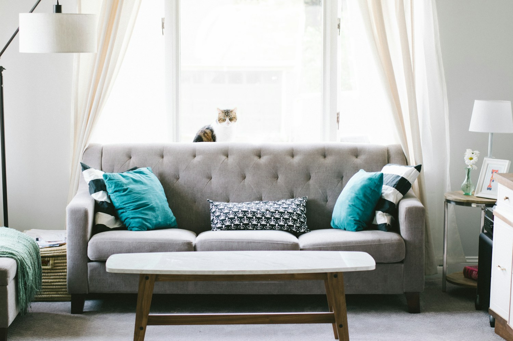

Listen first
We start with your priorities, practical needs and questions.
ABOUT US
Considered furniture. Natural textures. Spaces that feel unmistakably yours.

OUR STORY
A home is built around the way you live. Form & Grain is a furniture business concept centred on useful pieces, tactile finishes and an unhurried approach to choosing what belongs in your space.
We believe a useful conversation comes first. Understanding what you need helps us explain the options, agree the details and make the next step clear.
WHAT GUIDES US
We start with your priorities, practical needs and questions.
Understand the proposed approach, available choices and any limitations.
Confirm scope, availability and pricing before making a commitment.
Tell us a little about your plans. Start with a simple enquiry.